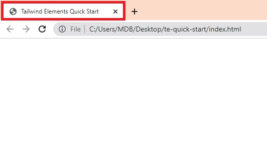
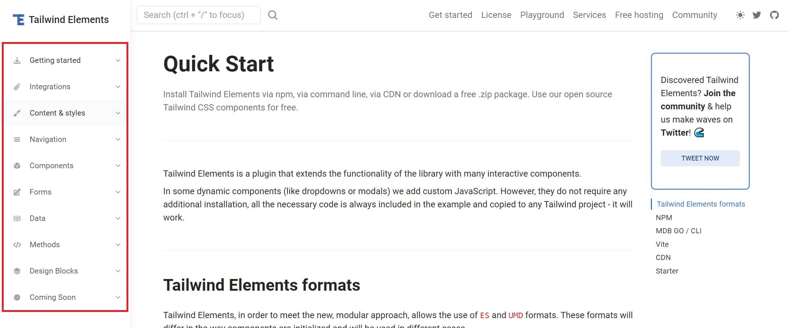

We have a long and fascinating journey ahead of us. However, before we move on to the individual aspects of our planned tour, I would like you to have the opportunity right now to feel the potential that TW Elements gives you.
Therefore, in this short and concise lesson, I will show you how super fast and easily you can launch TW Elements and create your first small project.
For this, we will use the CDN method, which is the fastest and easiest way. This means that instead of the normal installation, we will simply attach the appropriate links to our project and thanks to this we will be able to use Tailwind and Tailwind Elements.
Note 1: Take this lesson as a demonstration and don't worry if not everything is clear to you. Each aspect covered here will be explained in detail in future lessons.
Note 2: The code editor is a matter of preference, but if someone asks me what I would recommend, my answer is Visual Studio Code.
It's free and you can download it here.
Create an empty folder in a convenient location for you and name it whatever you want.
I created mine on the desktop and named it
"te-quick-start" ("te" being short for TW Elements)
Next, open this folder in your code editor.
index.html file
Create a new file and name it index.html
In Visual Studio Code, you can click ctrl + n to
create a new file, then ctrl + s to save the file.
Save the file as index.html in the folder created in the
previous step.
Add basic structure and HTML tags to your index.html file
After saving the file, open it in the browser by dragging and dropping it into the browser window.
You should see a blank screen, but the tab title will say "TW Elements Quick Start"

Now we will add few links to our index.html file, namely:
Update the index.html file so that it looks like this:
Everything is now ready and should work as it should. So let's take one of the TW Elements dynamic components, for example Carousel and insert it into our project.
Go to the
Carousel docs, click show code button and copy the HTML
code of the basic example:
Note that there is also a JavaScript tab, and the code there is used to initialize the components. However, when using Tailwind Elements in CDN form, we don't need to initialize them and all components work out of the box, just with pure HTML.
So let's paste the copied Carousel HTML code below the opening
<body> tag:
After saving the file and refreshing your browser window, you should see a working carousel. After clicking on the arrows, the slides should change, which means that both the TW Elements styles and the necessary JavaScript work correctly.
If something doesn't work, make sure you followed all the steps correctly.
Finally, your index.html file should look like this:
If everything works as it should, all you have to do is browse through the available components and functionalities and experiment with Tailwind Elements.
Simply copy it from our documentation and paste to your
index.html file.
In the menu on the left you will find dozens of different components and hundreds of options.
Have fun!
If something doesn't work as it should, you can always hit me on twitter 😉
Note: The CDN method is for testing and experimentation. You shouldn't use it for serious projects. Once you're done with the playing around, move on to the next lessons and install TW Elements using one of the recommended methods.
.jpg)
.jpg)
.jpg)